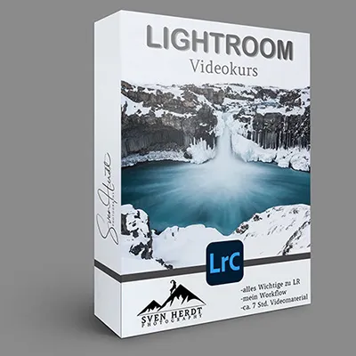
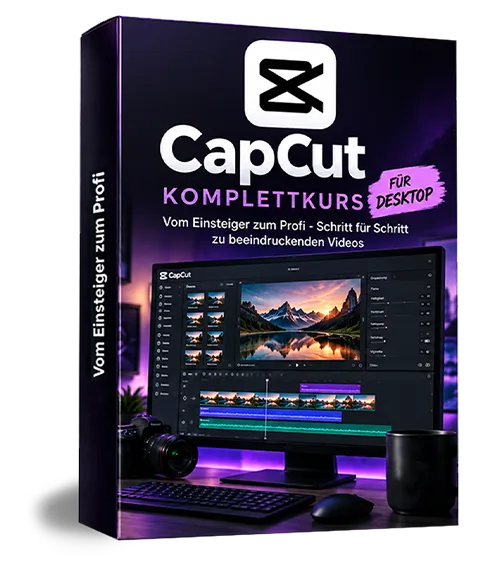
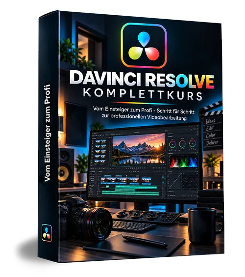

Lightroom Videokurs von Sven Herdt
Produktprofil · Marktplatz-Daten 2026-10-14 · Verkaufsseiten-Recherche 2026-10-14 · Kategorien: Photography & Film
- Lightroom Videokurs von Sven Herdt ist ein/e Download in Photography & Film, vertrieben über den Digistore24-Marktplatz von Anbieter SvenHerdt, gelistet seit 2021-03-29.
- Listenpreis $37.51 (single payment) — Checkout, Auslieferung und Rückerstattungen laufen über Digistore24 selbst, nicht über den Anbieter.
- Käuferschutz: keine standardisierte Garantie-Formulierung gefunden — Rückerstattungsbedingungen vor der Zahlung auf der offiziellen Seite prüfen.
Interesse an Lightroom Videokurs von Sven Herdt? Aktueller Preis, Boni und Garantiebedingungen finden Sie auf der offiziellen Seite des Anbieters:
Offizielle Verkaufsseite ansehen
Affiliate-Link (Werbung) — wir verdienen ggf. eine Provision, ohne Mehrkosten für Sie.

Marktplatz-Daten
| Produkttyp | Download |
|---|---|
| Preis | $37.51 (Single payment) |
| Garantie/Rückgabe | Laut Verkaufsseite des Anbieters — vor dem Kauf auf der offiziellen Seite prüfen |
| Anbieter | SvenHerdt (gelistet seit 2021-03-29) |
Marktplatz-Beschreibung des Anbieters
Ich persönlich arbeite ausschließlich mit Lightroom. Mit diesem Programm habe ich als Naturfotograf nur eine Software für alle meine Bedürfnisse. Im Vergleich zu anderen Programmen ist es dazu noch relativ einfach und schnell zu erlernen. Ich kann mit Lightroom: -Ordnung in meine gesamten Fotos bringen. -Gesuchte Bilder schnell wieder finden. -RAW-Dateien perfekt bearbeiten. -Panormamaaufnahemn sowie HDR-Fotos einfach erstellen. -Meine Bilder für Druck, Internet etc. perfektionieren und noch so einiges mehr…. 7 Stunden Videokurs Mit diesen Videokurs kannst du Lightroom schnell und einfach von Anfang an erlernen. Wir beginnen bei den Grundlagen und blicken immer tiefer in die Möglichkeiten dieses Programms. Weiter gebe ich dir noch Tips zur richtigen Ordnerstruktur und Sicherungen deiner Dateien. Am Ende hast du alles Nötige und sogar mehr rund um Lightroom gelernt! Vorteile Der LR-Kurs ist top aktuell und beinhaltet die neueste Version von LR-Classic (März 2021). Bis auf sehr wenige Ausnahmen ist er dennoch auch für ältere Versionen geeignet wie z.B Lightroom 6. Du bekommst du den Kurs als Datei. Somit kannst du ihn jederzeit am Computer ansehen auch ohne Internet. Mein Workflow Neben vielen Möglichkeiten die LR bietet lernst du auch meinen persönlichen Workflow kennen. Dieser beginnt bereits bei der Aufnahme. Danach folgt meine Arbeitsweise vom Sortieren bis hin zur Bearbeitung der Fotos. Anhand von einigen Beispielbildern erfährst du Schritt für Schritt wie ich meine RAW-Dateien schnell und natürlich aber trotzdem effektiv entwickle. Infos zum Videokurs Typ: Download mp4-Videodatei Dauer: ca. 7 Stunden Dateigröße: ca. 8GB Was erwartet dich? 1. INTRO 2. RAW oder JPG 3. Sinnvolle Ordnerstruktur am Computer 4. Lightroom Versionen im Überblick 5. Der Katalog und Grundverständnis 6. Einmalige Einstellungen und Übersicht 7. Das Wasserzeichen 8. BIBLIOTHEK 9. Importieren von Bildern 10. Vorschau und Optionen beim Import 11. Stichwörter ja/nein 12. Bildauswahl – Sternchen/Farben 13. Bibliotheksfilter 14. Sammlungen 15. Verschieben von Bildern und Ordner 16. ENTWICKELN 17. Histogramm 18. Meine Arbeitsschritte 19. Objektivkorrektur und Chromatische Aberration 20. Tranformieren & Freistellungswerkzeug 21. Weißabgleich (Grundeinstellungen) 22. Tonwert (Grundeinstellungen) 23. Präsenz (Grundeinstellungen) 24. Gradationskurve 25. HSL / Farbe 26. Color-Grading 27. Details / Schärfen und Entrauschen 28. Effekte / Vignettierung und Körnung 29. Kalibrierung 30. Virtuelle Kopie 31. Beispielbild 32. Beispielbild 2 33. Bereichsreperaturpinsel + Rote Augen 34. Verlaufsfilter 35. Radialfilter 36. Pinsel 37. Beispielbild 3 38. Vorgaben / Presets 39. Eigene Presets erstellen 40. Panorama 41. HDR 42. Stapelverarbeitung 43. Protokoll und Schappschüsse 44. Export 45. Export für Druck 46. XMP und DNG 47. Datentransfer zwischen Computern 48. Karte 49. Diashow 50. Buch 51. Drucken 52. Web 53. Datensicherung am Computer 54. OUTRO
Von der Verkaufsseite des Anbieters
Seitentitel: Lightroom Videokurs - Sven Herdt Photography
Hauptüberschrift
LIGHTROOM VIDEOKURS
Abschnitts-Überschriften
- ALGERIEN
- TAUGL
- UGANDA
- SENJA VESTERALEN
- NAMIBIA
- SCHOTTLAND
- FÄRÖER
- SPITZBERGEN
Einstiegstext
Für eine schnelle und natürliche Bildbearbeitung ist Lightroom das perfekte Werkzeug! Mit dem richtigen Workflow hat man wieder mehr Zeit für die Natur und Fotografie
Mit diesen Videokurs kannst du Lightroom schnell und einfach von Anfang an erlernen. Wir beginnen bei den Grundlagen und blicken immer tiefer in die Möglichkeiten dieses Programms. Weiter gebe ich dir noch Tips zur richtigen Ordnerstruktur, Sicherungen deiner Dateien. Am Ende hast du alles Nötige und sogar mehr rund um Lightroom gelernt!
Der LR-Kurs ist nicht mehr ganz aktuell. Er wurde in LR-Classic im März 2021 aufgenommen. Es gibt ein paar Neuerungen. Vor allem zu erwähnen wären hierbei die Masken und KI gesteuerte Hilfen wie das Stempeln oder entrauschen. Du bekommst den Kurs als Datei. Somit kannst du ihn jederzeit am Computer ansehen auch ohne Internet.
Neben vielen Möglichkeiten die LR bietet lernst du auch meinen persönlichen Workflow kennen. Dieser beginnt bereits bei der Aufnahme. Danach folgt meine Arbeitsweise vom Sortieren bis hin zur Bearbeitung der Fotos. Anhand von einigen Beispielbildern erfährst du Schritt für Schritt wie ich meine RAW-Dateien schnell und natürlich aber trotzdem effektiv entwickle.
Recherche-Methode: rohes HTML · 999 Wörter · Qualität: rich · recherchiert am 2026-10-14. Vollständige Recherche-Datei (MD) ↗
Wie Produkte dieser Art geliefert werden
Allgemeiner Hinweis zu diesem Produkttyp (keine anbieterspezifische Anleitung): Download-Produkte werden digital geliefert: sofort nach dem Checkout erhalten Sie Downloadlinks (oder Zugang zu einem Mitgliederbereich) — kein physischer Versand. Für die genaue Anwendung von Lightroom Videokurs von Sven Herdt sind die offizielle Verkaufsseite und die enthaltenen Materialien maßgeblich.
Gut zu wissen
- Keine Garantie-Formulierung in unserer Recherche gefunden — bestätigen Sie das Rückgabefenster auf der offiziellen Seite, bevor Sie kaufen.
Was ist Lightroom Videokurs von Sven Herdt?
Lightroom Videokurs von Sven Herdt ist ein/e download in der Kategorie Fotografie & Film des Digistore24-Marktplatzes, veröffentlicht von Anbieter SvenHerdt und im Verkauf seit 2021-03-29. Der Anbieter beschreibt es so: "Ich persönlich arbeite ausschließlich mit Lightroom. Mit diesem Programm habe ich als Naturfotograf nur eine Software für alle meine Bedürfnisse. Im Vergleich zu anderen Programmen ist es dazu noch relativ einfach und schnell zu erlernen. Ich kann mit Lightroo" (Marktplatz-Beschreibung des Anbieters, leicht gekürzt).
Lightroom Videokurs von Sven Herdt Preis: was Sie zahlen
Der Marktplatz listet Lightroom Videokurs von Sven Herdt zum $37.51 Preis (single payment). Digistore24 fügt im Checkout die gesetzliche Steuer Ihres Landes hinzu — dort sehen Sie den Endbetrag vor der Zahlung. Eine separate Plattformgebühr gibt es nicht; Anbieter können eigene Upsells nach dem Checkout anbieten.
Lightroom Videokurs von Sven Herdt Rückerstattung und Geld-zurück-Garantie
Wir haben keine standardisierte Garantie-Formulierung auf der Verkaufsseite gefunden. Rückerstattungen für Digistore24-Käufe laufen über die Plattform: Antrag über den Support-Link in Ihrer Bestell-E-Mail, innerhalb des Garantiezeitfensters, das im Checkout angezeigt wird. Praktischer Rat: Entscheiden Sie innerhalb des Fensters — wenn das Produkt unter den Erwartungen bleibt, erstatten lassen statt irren lassen.
Mechanik im Detail: So funktionieren Digistore24-Rückerstattungen.
Für wen ist Lightroom Videokurs von Sven Herdt geeignet?
Basierend auf der Fotografie & Film-Einordnung und der single payment-Abrechnung richtet sich Lightroom Videokurs von Sven Herdt an Käufer, die fotografie & film-Lösungen suchen im mittleren Preisbereich. Der ehrliche Test ist nicht die Kategorie, sondern Ihre eigene Situation: Werden Sie es realistisch innerhalb des Garantiefensters nutzen? Wenn ja, ist der Preis eine Investition; wenn nein, ist er Ballast — unabhängig von der Qualität.
Ist Lightroom Videokurs von Sven Herdt seriös? Was Sie vor dem Kauf prüfen
Wir bewerten keine Seriosität — das kann niemand, ohne das Produkt zu nutzen. Prüfbare Punkte, alle auf dieser Seite: die Marktplatz-Historie des Anbieters (im Verkauf seit 2021-03-29), die wörtlichen Verkaufsseiten-Auszüge unten (gekennzeichnet als Anbieteraussagen — deren Werbung, nicht unsere Empfehlung), die Garantiebedingungen im Checkout und die Auslieferungsart. Vorsichtsignale bei jedem Angebot: Countdown-Dringlichkeit gepaart mit vagen Rückerstattungsbedingungen, Testimonials ohne Datum und Anbieterseiten, die den Preis bis zum Checkout verstecken.
Wie kommen Sie nach dem Kauf an Lightroom Videokurs von Sven Herdt?
Der Checkout läuft über Digistore24. Nach der Zahlung: Download-Produkte werden digital geliefert: sofort nach dem Checkout erhalten Sie Downloadlinks (oder Zugang zu einem Mitgliederbereich) — kein physischer Versand. Bewahren Sie die Bestell-E-Mail auf — sie ist Ihr Schlüssel zum/d zur download, zu Rückerstattungsanträgen und zum Digistore24-Käufersupport.
Lightroom Videokurs von Sven Herdt Erfahrungen: so recherchieren Sie richtig
Die meisten „Erfahrungsberichte" zu Marktplatz-Produkten sind Affiliate-Inhalte — einschließlich Seiten wie dieser, die an Käufen mitverdienen. Behandeln Sie jeden Bericht (auch unseren) als Ausgangspunkt und prüfen Sie gegen Primärquellen: die Verkaufsseite des Anbieters, die Digistore24-Rückerstattungsrichtlinie und — für fotografie & film — unabhängige Communities außerhalb des Affiliate-Ökosystems. Auf dieser Seite sind die Verkaufsseiten-Auszüge unten wörtlich zitiert, damit Sie die Aussagen des Anbieters bewerten können, ohne wegzuklicken.
Wie Sie Lightroom Videokurs von Sven Herdt sicher kaufen
- Öffnen Sie die offizielle Verkaufsseite und lesen Sie das vollständige Angebot.
- Bestätigen Sie Endpreis und Garantiezeitfenster auf der Digistore24-Kassenseite — sie ist bindend, kein Vergleichsportal.
- Zahlen Sie innerhalb des Digistore24-Checkouts (niemals per Überweisung oder Off-Platform-Links).
- Speichern Sie die Bestellbestätigung; notieren Sie die Rückerstattungsfrist im Kalender.
- Prüfen Sie zügig. Der Digistore24-Käufersupport hilft, wenn der Anbieter nicht reagiert.
Vollständiges Recherche-Archiv für dieses Produkt (Markdown: kompletter Marktplatz-Datensatz + wörtliche Verkaufsseiten-Auszüge): Lightroom Videokurs von Sven Herdt — Datenarchiv (.md).
- Listenpreis & Abrechnung — Quelle: offizielle Digistore24-Marktplatz-API, Stand 2026-10-14. Maßgeblich für den aktuellen Preis ist immer die Kassenseite.
- Verkaufsseiten-Zitate — Quelle: https://svenherdt.com/lightroom-videokurs/, abgerufen 2026-10-14 (Methode: rohes HTML). Verify: offizielle Seite öffnen.
- Garantie / Rückgabe — vom Anbieter festgelegt; vor dem Kauf auf der Verkaufsseite bestätigen.
- Nicht von uns geprüft: Produktqualität, Ergebnisse, Testimonials — kein Praxistest für dieses Listing durchgeführt.
Häufige Fragen zu Lightroom Videokurs von Sven Herdt
Antworten aus dem Marktplatz-Snapshot (2026-10-14) und der Verkaufsseiten-Recherche (2026-10-14); Anbieteraussagen sind inline gekennzeichnet.
Was ist Lightroom Videokurs von Sven Herdt?
Lightroom Videokurs von Sven Herdt ist ein Angebot des Typs „Download" im Digistore24-Marktplatz, Anbieter: SvenHerdt, gelistet seit 2021-03-29. Eingepflegt unter Fotografie & Film. Digistore24 wickelt Checkout, Lieferung und Rückgaben ab.
Wie viel kostet Lightroom Videokurs von Sven Herdt?
Der Digistore24-Marktplatz listet es für $37.51 (single payment). Preise legt der Anbieter fest und können sich ändern — der Marktplatz-Eintrag oben zeigt den Schnappschuss; die offizielle Verkaufsseite zeigt den aktuellen Preis.
Gibt es eine Geld-zurück-Garantie für Lightroom Videokurs von Sven Herdt?
Unsere Verkaufsseiten-Recherche hat keine explizite Garantie-Formulierung gefunden. Viele Digistore24-Produkte bieten 60 Tage Geld-zurück, aber das legt jeder Anbieter selbst fest — bestätigen Sie es auf der offiziellen Verkaufsseite, bevor Sie kaufen.
Ist Lightroom Videokurs von Sven Herdt seriös?
Wir bewerten keine Seriosität — wir veröffentlichen überprüfbare Zahlen: Anbieter SvenHerdt (gelistet seit 2021-03-29), mit der vollständigen Verkaufsseiten-Recherche archiviert auf dieser Seite (Anbieteraussagen als solche gekennzeichnet). Lesen Sie unsere 6-Punkte-Bewertungsmethode und entscheiden Sie anhand der Zahlen — oder diskutieren Sie Lightroom Videokurs von Sven Herdt auf GitHub.
Wo kann ich Lightroom Videokurs von Sven Herdt sicher kaufen?
Nur über die offizielle Verkaufsseite, die auf dieser Seite verlinkt ist (Checkout und Rückgaben laufen über Digistore24). Prüfen Sie dort Preis und Garantie vor der Bestellung. Der Link ist ein Affiliate-Link — der Kauf unterstützt diese Website ohne Mehrkosten für Sie.
Wie erhalte ich Lightroom Videokurs von Sven Herdt nach der Zahlung?
Der Checkout läuft über Digistore24: Nach der Zahlung erhalten Sie Ihren Zugang oder Download per E-Mail und in Ihrem Digistore24-Kundenkonto. Lieferdetails für diesen Produkttyp: Download-Produkte werden digital geliefert: sofort nach dem Checkout erhalten Sie Downloadlinks (oder Zugang zu einem Mitgliederbereich) — kein physischer Versand. Bei Problemen kann der Digistore24-Käufersupport Ihre Bestellung wiederherstellen.
Alle 50 Käuferfragen zu Fotografie & Film — das komplette Kategorie-FAQ.
Lightroom Videokurs von Sven Herdt auf Reddit diskutieren
In Community-Threads vergleichen echte Käufer Erfahrungen. Wir verlinken Communities, keine einzelnen Posts — Threads verschwinden, Subreddits bleiben:
- Reddit-Suche nach „Lightroom Videokurs von Sven Herdt" — Live-Ergebnisse, von uns nicht beeinflusst.
- Top-„Erfahrungs"-Treffer dieses Jahr — selbst nach Aktualität filtern.
Passendes auf Amazon.de
Physische Produkte und Zubehör, die häufig zusammen mit Lightroom Videokurs von Sven Herdt gekauft werden:
- Kamera Zubehör auf Amazon.de — Top-Ergebnisse, Amazon-Ranking.
- Bestseller: Kamera Zubehör — live Liste von Amazon, von uns nicht kuratiert.
Werbung: Als Amazon-Partner verdient DigistorePicks DE an qualifizierten Käufen (Partner-tag adminstorede-21). Amazon setzt eigene Preise und Provisionen (niedrige einstellige Prozente — weit unter den 30–75% der Digistore24-Anbieter). Amazon ist ein Convenience-Angebot für Sachprodukte, kein Ersatz für das digitale Produkt oben.
Ähnliche Angebote in Fotografie & Film

Nischenlücke - Extrem hohe Conversion Rate auf Cold Traffic Worum geht's: Wie Frauen mit UGC (User Generated Content) Geld verdienen. Durch Reels, Fotos ode

Unser Fotografie-Grundkurs ist ein 7-wöchiger Online-Kurs und zeigt dir, wie du umwerfend schöne Bilder machst. Egal, welche Kamera du hast. Ideal für Anfänger

Ein Fotobearbeitungskurs für Einsteiger, Hobbyfotografen und angehende Profis. Adobe Lightroom Classic einfach erklärt mit über 30 Praxisbeispielen, laufend akt

Der Onlinekurs für Profis und Hobbyfotografen Das Wissen aus 17 Jahren professioneller Porträtfotografie hat Ron Kuhwede für Sie in diesem einzigartigen Onlinek
Ähnliche Preislage in Fotografie & Film

Unsere Plattform Affiliateking.net – nutze sie, um zusätzlich zu den Provisionen saftige Zusatzeinnahmen zu kassieren. Hier direkt zur Partnerseite + Werbemitte

Unsere Plattform Affiliateking.net – nutze sie, um zusätzlich zu den Provisionen saftige Zusatzeinnahmen zu kassieren. Hier direkt zur Partnerseite + Werbemitte

Unsere Plattform Affiliateking.net – nutze sie, um zusätzlich zu den Provisionen saftige Zusatzeinnahmen zu kassieren. Hier direkt zur Partnerseite + Werbemitte
Ähnliche Suchanfragen
Wo Sie es sich ansehen können
Wo Sie es sich ansehen können
Aktuelle Preise, Garantie und Boni finden Sie auf der offiziellen Verkaufsseite:
Offizielle Verkaufsseite ansehen
Das ist ein Affiliate-Link (Werbung) — kaufen Sie darüber, verdienen wir ggf. eine Provision, ohne Mehrkosten für Sie.
Quellen & weiterführende Informationen
- Offizielle Verkaufsseite (aktueller Preis, Garantie, Boni): svenherdt.com/lightroom-videokurs/ (Affiliate-Link)
- Öffentliche Digistore24-Produktseite: checkout-ds24.com/product/381498
- Vollständige Recherche-Datei (Markdown, versioniert): content/products/36227-lightroom-videokurs-von-sven-herdt.md
- Marktplatz-Kategorie: Fotografie & Film
Wie wir Produkte wie Lightroom Videokurs von Sven Herdt bewerten
Sechs Prüfungen, ausschließlich mit offiziellen Marktplatz-Zahlen. Die vollständige Bewertungsmethode lesen · unsere Recherche-Standards & Kennzeichnung.
Fragen oder eigene Erfahrungen mit Lightroom Videokurs von Sven Herdt?
Praxis-Tests veröffentlichen wir erst, nachdem wir ein Produkt selbst gekauft haben — aber Ihre Erfahrung hilft anderen Lesern: Diskussion zu Lightroom Videokurs von Sven Herdt auf GitHub starten/verfolgen. Falsche Zahl gefunden? Korrektur melden — jede Seite zeigt ihre Datenstände, Korrekturen gelten für die ganze Website.